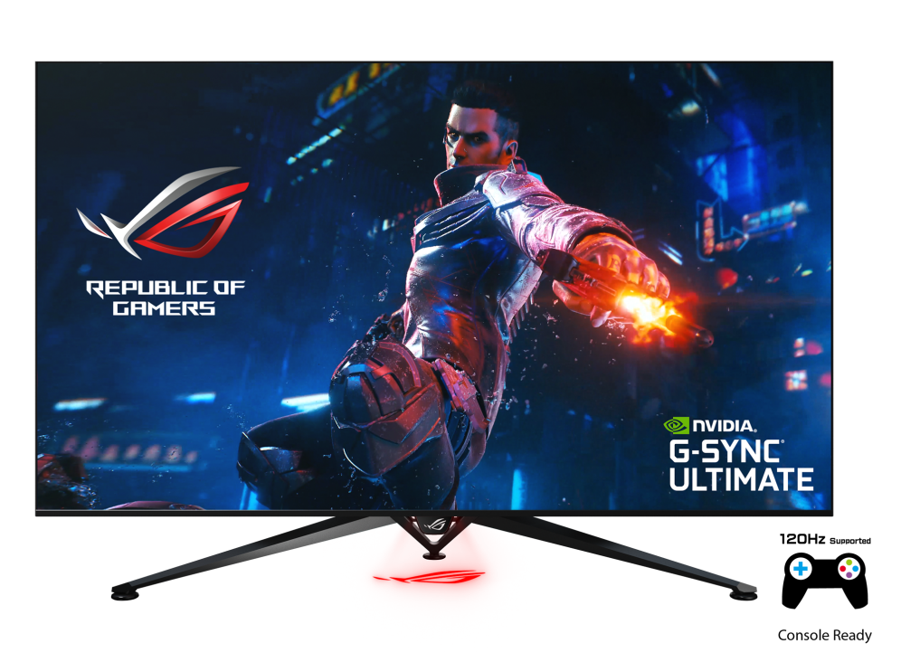

|  |
| ROG STRIX XG43VQ | ROG Swift PU65UQ |
| 售價：NT$32,888元 | 售價：NT$65,000元 |
| 影像特色：Trace Free 無殘影技術 : 支援 支援HDCP : Yes 支援VRR : FreeSync™ Premium Pro | 影像特色：色彩準確度： △E≦ 2 GamePlus(電競模式) : 支援 支援HDCP : Yes 支援VRR : G-SYNC® ULTIMATE |
| 聲音特色：Speaker:支援 (5Wx2) | 聲音特色：Speaker:Yes(15Wx2) |
| 訊號頻率：Digital Signal Frequency : 30~167 KHz(H) / 48~120Hz(V) | 訊號頻率：Digital Signal Frequency : HDMI: 30K~135KHz(H)/ 24~60Hz(V) |
| 產品尺寸：帶支架尺寸（寬x高x深）：1057.12 x 517.46 x 309.03 mm | 產品尺寸：帶支架尺寸（寬x高x深）：1448.08 x 946.9 x 389.82 mm |
| 配件：DisplayPort 傳輸線 HDMI 傳輸線 電源供應器 電源線 USB 3.0 傳輸線 VESA mount kit | 配件：Cable Clip 色彩預校正報告 DisplayPort 傳輸線 HDMI 傳輸線 電源線 快速入門手冊 遙控器 USB 3.0 傳輸線 保證卡 |